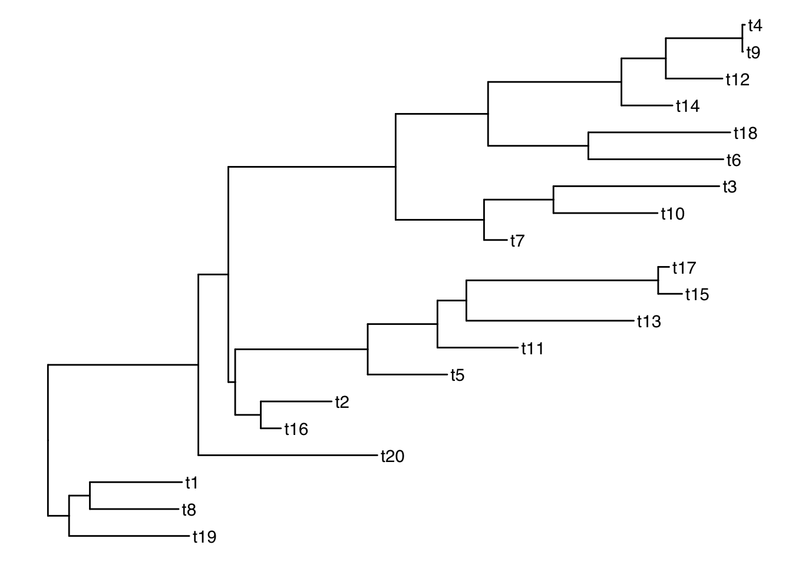
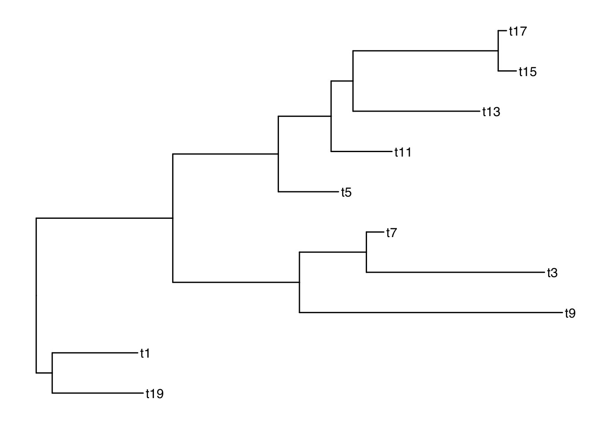
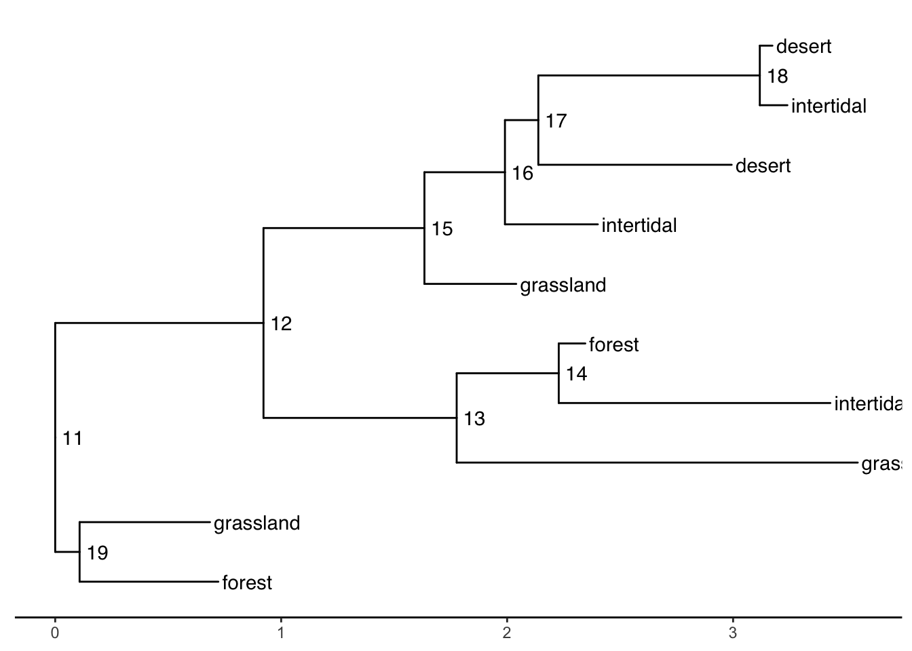

require(ape)
require(ggtree)
require(treeio)Acknowledgements
References for this Material:
- Treedata book by Guangchuang Yu https://yulab-smu.top/treedata-book/
- https://bioconnector.github.io/workshops/r-ggtree.html
Learning objectives
Learning Objectives
At the end of this lesson you will:
- Understand information content of phylogenetically structured data
- Understand particular R tree formats in ape, phylobase, and ouch
- Be able to hand-make trees
- Be able to import trees from nexus, newick, and other major formats in use today
- Be able to convert trees from one format to another
- Be able to perform basic tree manipulations
R packages you will need
apeggtreetidytreetreeio
Overview
ggtree is a powerful phylogenetic tree plotting package, that is used alongside treeio and tidytree packages to import/export and to manipulate phylogenetic trees, respectively. These packages allow you to subset or combine trees with data, annotate, and plot in so many different ways using the grammar of graphics.
Because itʻs written in the style of ggplot2 and the tidyverse, there are a lot of functions to remember, and now there are also multiple object types. The key to working effectively with ggtree is to be aware of what type of object you are working with, whether it is a dataframe, a tibble, a phylo tree, a treedata tibble, or ggtree object. It is easy to convert between these at will if you know what you are dealing with.
phylo -> treedata
Functions like read.tree amd read.nexus, etc. will read in objects of class phylo (they are actually referencing the ape function).
To show this, letʻs first generate a random tree using ape::rtree()
tree <- rtree(20)
class(tree)[1] "phylo"plot(tree) # ape plotting function
Note: ggtree can also accept phylo objects as arguments:
ggtree(tree) # ggtree plotting function
To save as newick and nexus formats, treeio has the following:
treeio::write.nexus(tree, file="tree.nex")
treeio::write.tree(tree, file="tree.tree")
list.files() [1] "anolis.SSD.raw.csv" "bigtree.nex" "ggtree_functions.R"
[4] "ggtree.R" "index_files" "index.qmd"
[7] "index.rmarkdown" "mytree.tree" "rnw2qmd.R"
[10] "tree.nex" "tree.tree" Take a look at these files. They should be in nexus and newick formats, respectively.
tree_nex <- treeio::read.nexus(file="tree.nex")
tree_new <- treeio::read.newick(file="tree.tree")
class(tree_nex)[1] "phylo"class(tree_new)[1] "phylo"
Note
If you have trees from iqtree, BEAST etc., you should use the specialized read functions because they will capture the metadata embedded in the treeformat including support values.
Coverting between data types
The main functions for coersion are:
as.phylo (tree) # to phylo
Phylogenetic tree with 20 tips and 19 internal nodes.
Tip labels:
t11, t9, t10, t2, t6, t5, ...
Rooted; includes branch lengths.as.treedata(tree) # to treedata'treedata' S4 object'.
...@ phylo:
Phylogenetic tree with 20 tips and 19 internal nodes.
Tip labels:
t11, t9, t10, t2, t6, t5, ...
Rooted; includes branch lengths.treedata <- as.treedata(tree)
as_tibble(treedata) # to tibble# A tibble: 39 × 4
parent node branch.length label
<int> <int> <dbl> <chr>
1 22 1 0.279 t11
2 22 2 0.127 t9
3 26 3 0.300 t10
4 27 4 0.435 t2
5 27 5 0.553 t6
6 28 6 0.764 t5
7 28 7 0.499 t1
8 30 8 0.0345 t7
9 30 9 0.787 t16
10 33 10 0.871 t20
# … with 29 more rows
# ℹ Use `print(n = ...)` to see more rowsSimulate phenotypic data
Add tiplabels
ggtree(tree) + geom_tiplab()
Get the tip labels
There is a function get_taxa_name() which is very handy, but NOTE: its argument is a ggtree object, not a treedata object.
p <- ggtree(tree) + geom_tiplab()
get_taxa_name(p) [1] "t19" "t20" "t15" "t13" "t16" "t7" "t6" "t2" "t10" "t1" "t5" "t4"
[13] "t17" "t14" "t3" "t12" "t18" "t8" "t9" "t11"taxa <- get_taxa_name(p)Simulate a data matrix:
n <- length(taxa)
size <- rnorm(n, mean=20, sd=5)
habitat <- sample(c("desert", "grassland", "forest", "intertidal"), size=n, replace=T)
dat <- data.frame( "label"= taxa, size, habitat)
dat label size habitat
1 t19 18.925902 grassland
2 t20 23.708948 forest
3 t15 17.667552 forest
4 t13 26.492428 intertidal
5 t16 23.094844 forest
6 t7 28.153165 desert
7 t6 27.525594 forest
8 t2 18.492712 grassland
9 t10 24.009872 forest
10 t1 16.825641 grassland
11 t5 24.801745 forest
12 t4 8.793568 forest
13 t17 17.280791 desert
14 t14 22.973981 desert
15 t3 25.381193 intertidal
16 t12 23.971733 grassland
17 t18 14.399356 grassland
18 t8 17.719463 forest
19 t9 18.044723 intertidal
20 t11 16.778249 grasslandSee our ggtree as a treedata object:
as.treedata(p) %>% as_tibble %>% as.data.frame # ggtree -> treedata -> tibble -> dataframe parent node branch.length label
1 22 1 0.278939538 t11
2 22 2 0.127345336 t9
3 26 3 0.300447684 t10
4 27 4 0.435377757 t2
5 27 5 0.552980925 t6
6 28 6 0.764464183 t5
7 28 7 0.499308378 t1
8 30 8 0.034501367 t7
9 30 9 0.787341947 t16
10 33 10 0.870559227 t20
11 33 11 0.813121315 t19
12 32 12 0.177632412 t15
13 31 13 0.715450910 t13
14 36 14 0.197539931 t3
15 38 15 0.214468429 t17
16 38 16 0.751333333 t4
17 37 17 0.581087446 t14
18 39 18 0.183712207 t18
19 39 19 0.798547462 t12
20 34 20 0.688117656 t8
21 21 21 NA <NA>
22 21 22 0.412084444 <NA>
23 21 23 0.991313945 <NA>
24 23 24 0.847770900 <NA>
25 24 25 0.128256809 <NA>
26 25 26 0.611658429 <NA>
27 26 27 0.721636676 <NA>
28 25 28 0.355111233 <NA>
29 24 29 0.010121288 <NA>
30 29 30 0.344141605 <NA>
31 29 31 0.316786686 <NA>
32 31 32 0.058795683 <NA>
33 32 33 0.032994980 <NA>
34 23 34 0.798382514 <NA>
35 34 35 0.007182305 <NA>
36 35 36 0.930358109 <NA>
37 36 37 0.984382103 <NA>
38 37 38 0.277136115 <NA>
39 35 39 0.942967743 <NA>Merge tree with data
Now that we have a matching key in both the tree and data objects, we can join the tree with the dataframe by those matching labels using ggtreeʻs full_join:
ttree <- full_join(tree, dat, by = "label")
ttree'treedata' S4 object'.
...@ phylo:
Phylogenetic tree with 20 tips and 19 internal nodes.
Tip labels:
t11, t9, t10, t2, t6, t5, ...
Rooted; includes branch lengths.
with the following features available:
'size', 'habitat'.
# The associated data tibble abstraction: 39 × 5
# The 'node', 'label' and 'isTip' are from the phylo tree.
node label isTip size habitat
<int> <chr> <lgl> <dbl> <chr>
1 1 t11 TRUE 16.8 grassland
2 2 t9 TRUE 18.0 intertidal
3 3 t10 TRUE 24.0 forest
4 4 t2 TRUE 18.5 grassland
5 5 t6 TRUE 27.5 forest
6 6 t5 TRUE 24.8 forest
7 7 t1 TRUE 16.8 grassland
8 8 t7 TRUE 28.2 desert
9 9 t16 TRUE 23.1 forest
10 10 t20 TRUE 23.7 forest
# … with 29 more rows
# ℹ Use `print(n = ...)` to see more rowsttree %>% as_tibble %>% as.data.frame parent node branch.length label size habitat
1 22 1 0.278939538 t11 16.778249 grassland
2 22 2 0.127345336 t9 18.044723 intertidal
3 26 3 0.300447684 t10 24.009872 forest
4 27 4 0.435377757 t2 18.492712 grassland
5 27 5 0.552980925 t6 27.525594 forest
6 28 6 0.764464183 t5 24.801745 forest
7 28 7 0.499308378 t1 16.825641 grassland
8 30 8 0.034501367 t7 28.153165 desert
9 30 9 0.787341947 t16 23.094844 forest
10 33 10 0.870559227 t20 23.708948 forest
11 33 11 0.813121315 t19 18.925902 grassland
12 32 12 0.177632412 t15 17.667552 forest
13 31 13 0.715450910 t13 26.492428 intertidal
14 36 14 0.197539931 t3 25.381193 intertidal
15 38 15 0.214468429 t17 17.280791 desert
16 38 16 0.751333333 t4 8.793568 forest
17 37 17 0.581087446 t14 22.973981 desert
18 39 18 0.183712207 t18 14.399356 grassland
19 39 19 0.798547462 t12 23.971733 grassland
20 34 20 0.688117656 t8 17.719463 forest
21 21 21 NA <NA> NA <NA>
22 21 22 0.412084444 <NA> NA <NA>
23 21 23 0.991313945 <NA> NA <NA>
24 23 24 0.847770900 <NA> NA <NA>
25 24 25 0.128256809 <NA> NA <NA>
26 25 26 0.611658429 <NA> NA <NA>
27 26 27 0.721636676 <NA> NA <NA>
28 25 28 0.355111233 <NA> NA <NA>
29 24 29 0.010121288 <NA> NA <NA>
30 29 30 0.344141605 <NA> NA <NA>
31 29 31 0.316786686 <NA> NA <NA>
32 31 32 0.058795683 <NA> NA <NA>
33 32 33 0.032994980 <NA> NA <NA>
34 23 34 0.798382514 <NA> NA <NA>
35 34 35 0.007182305 <NA> NA <NA>
36 35 36 0.930358109 <NA> NA <NA>
37 36 37 0.984382103 <NA> NA <NA>
38 37 38 0.277136115 <NA> NA <NA>
39 35 39 0.942967743 <NA> NA <NA>And thatʻs what our treedata object looks like flattened out!
Subsetting the tree
Functions: drop.tip() and keep.tip()
Suppose we want to drop all of the even tips:
todrop <- paste("t", 1:10*2, sep="")
todrop [1] "t2" "t4" "t6" "t8" "t10" "t12" "t14" "t16" "t18" "t20"smalltree <- drop.tip(ttree, todrop)
smalltree'treedata' S4 object'.
...@ phylo:
Phylogenetic tree with 10 tips and 9 internal nodes.
Tip labels:
t11, t9, t5, t1, t7, t19, ...
Rooted; includes branch lengths.
with the following features available:
'size', 'habitat'.
# The associated data tibble abstraction: 19 × 5
# The 'node', 'label' and 'isTip' are from the phylo tree.
node label isTip size habitat
<int> <chr> <lgl> <dbl> <chr>
1 1 t11 TRUE 16.8 grassland
2 2 t9 TRUE 18.0 intertidal
3 3 t5 TRUE 24.8 forest
4 4 t1 TRUE 16.8 grassland
5 5 t7 TRUE 28.2 desert
6 6 t19 TRUE 18.9 grassland
7 7 t15 TRUE 17.7 forest
8 8 t13 TRUE 26.5 intertidal
9 9 t3 TRUE 25.4 intertidal
10 10 t17 TRUE 17.3 desert
# … with 9 more rows
# ℹ Use `print(n = ...)` to see more rowsggtree(smalltree) + geom_tiplab()
drop.tip keeps all of the metadata! keep.tip is imported from ape so it has to be converted to phylo and then the data joined again after.
Plotting with node labels
The geometries geom_text() and geom_node() are helpful for labelling all of the nodes. The function geom_tiplab() labels only the tips.
Add node labels so you know what the internal node numbers are:
ggtree(smalltree) +
geom_tiplab() +
geom_text(aes(label=node), hjust=-.3) # node numbers
Note: The tiplabels and the node labels crashed!
There are also 2 versions: geom_text2() and geom_node2() that allow subsetting the nodes, when you want the geometry to apply to only some of the nodes.
ggtree(smalltree) +
geom_tiplab() +
geom_text2(aes(label=node, subset=!isTip), hjust=-.3) # node numbers
isTip is a column of the ggtree object, so it is inherited when we provide the ggtree object.
Plotting with alternative tip labels
The dataframe portion of the treedata object can hold any number of columns of metadata. Perhaps you have some real names in a different column (like a display name), it is easy to swap out the tip labels. Here letʻs just use the habitat column
ggtree(smalltree) +
geom_tiplab(aes(label=habitat)) +
geom_text2(aes(label=node, subset=!isTip), hjust=-.3) # node numbers
When your tip labels get cut off
Add an x scale (usually time):
ggtree(smalltree) +
geom_tiplab(aes(label=habitat)) +
geom_text2(aes(label=node, subset=!isTip), hjust=-.3) + # node numbers
theme_tree2()
You can increase the size of the plot area to accommodate the longer labels:
ggtree(smalltree) +
geom_tiplab(aes(label=habitat)) +
geom_text2(aes(label=node, subset=!isTip), hjust=-.3) + # node numbers
theme_tree2() +
xlim(0,5)Tree layouts
require(cowplot)
plot_grid(
ggtree(ttree),
ggtree(ttree, layout="roundrect"),
ggtree(ttree, layout="slanted"),
ggtree(ttree, layout="ellipse"),
ggtree(ttree, layout="circular"),
ggtree(ttree, layout="fan", open.angle=120),
ggtree(ttree, layout="equal_angle"),
ggtree(ttree, layout="daylight"),
ggtree(ttree, branch.length='none'),
ggtree(ttree, layout="ellipse", branch.length="none"),
ggtree(ttree, branch.length='none', layout='circular'),
ggtree(ttree, layout="daylight", branch.length = 'none')
) Plotting data on the tree
NEED TO WORK ON THIS A BIT MORE
require(ggplot2)
smdat <- smalltree %>% as_tibble
ggtree(smalltree) +
geom_tiplab(aes(label=habitat)) +
geom_text2(aes(label=node, subset=!isTip), hjust=-.3) + # node numbers
theme_tree2() +
xlim(0,5) +
geom_facet(panel = "Size", data=smdat, geom = geom_col,
aes(x = size), orientation = 'y', width = .6)Example datasets
save to your working directory:
bigtree.nex anolis.SSD.raw.csv ggtree.R
This is an example of a typical workflow. We have carefully collected phenotypic data, and someone has published a massive phylogeny. We need to subset the tree to just the taxa we want to work on.